InTouch --> 收购System Platform --> 在SP基础重新构建InTouch，提供丰富的HMI
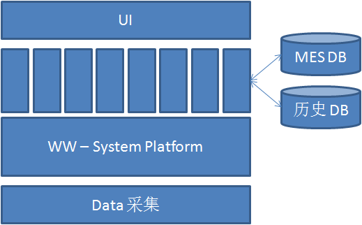
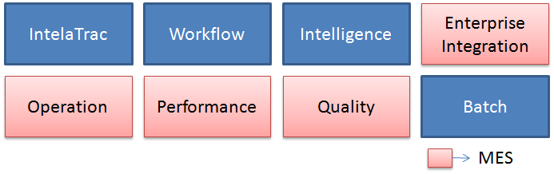
MES 制造执行系统(manufacturing execution system，简称MES），包含生产运营和资产管理等，在WW中包括四个部分： 生产管理 Operations, 设备绩效 Performance, 质量管理 Quality, Enterprise Integration。
制造业信息化的三层模型
MES更多内容： MES互动百科
生产事件自动触发： 通过对设备的监控，根据监控的结果发起某一个生产流程
SPC 分析 --> 报警
样本计划
自动触发，维护工单
广泛的数据连接性
设备的数据如何采集上来的？
各种各样的数据 集成开发环境
两化融合：自动化+信息化
构建与WW-SP之上。
基于面向对象设计，所以设备都是对象，有对象定义，有对象实例。
支持IDE来定义模板（定义对象），实例化对象（设备）。（替代方案：使用脚本？）
Situational Awareness： 情景感知，扁平、简明、动画元素、高性能。WW新的HMI设计源于这本树《The High Performance HMI HandBook》的理念。
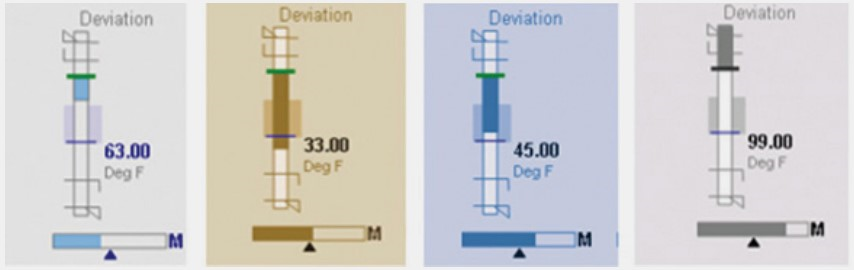
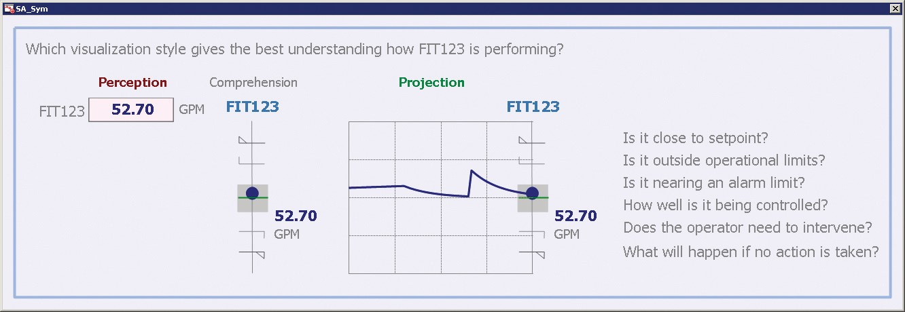
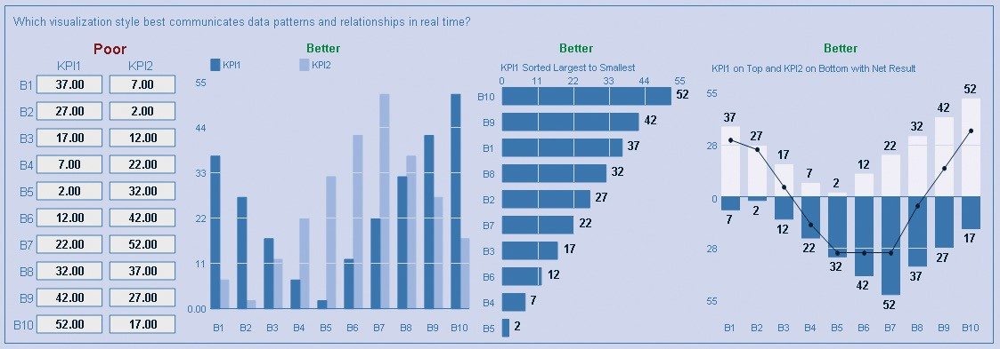
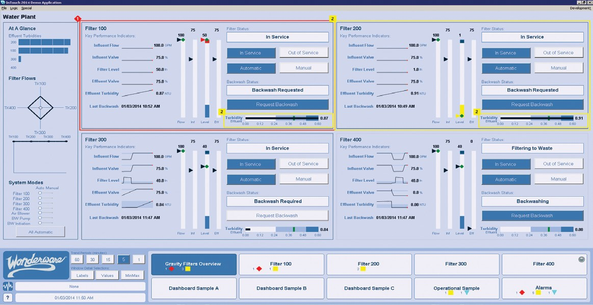
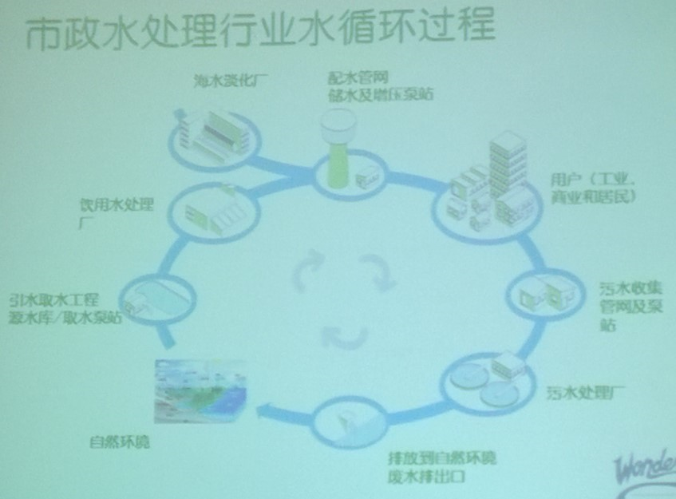

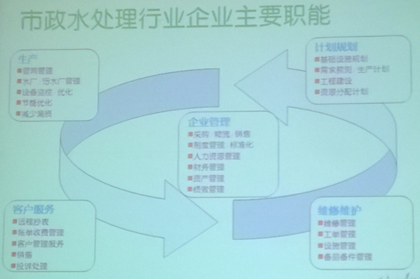
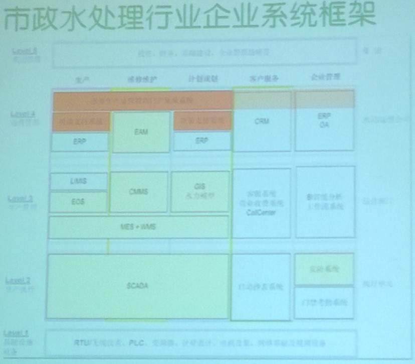
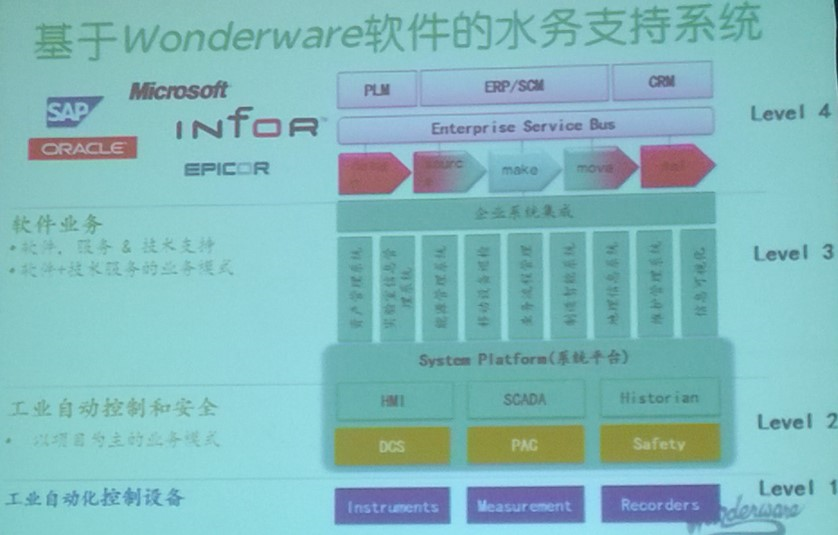
自动化+信息化 动态监控+数字化管理
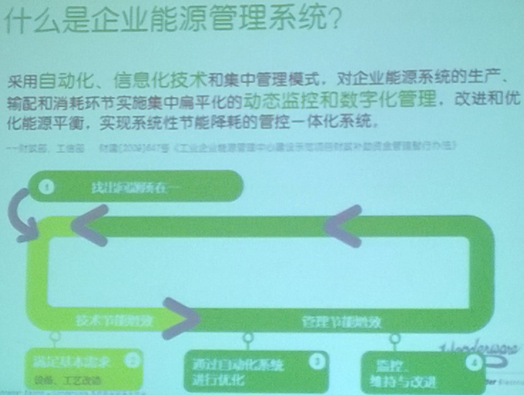
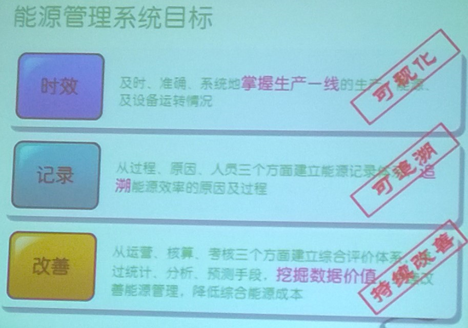
1）数据有效捕获 2）建立能源管理规程 3）PDCA持续改进方法论 4）软硬件支持
PDCA方法论
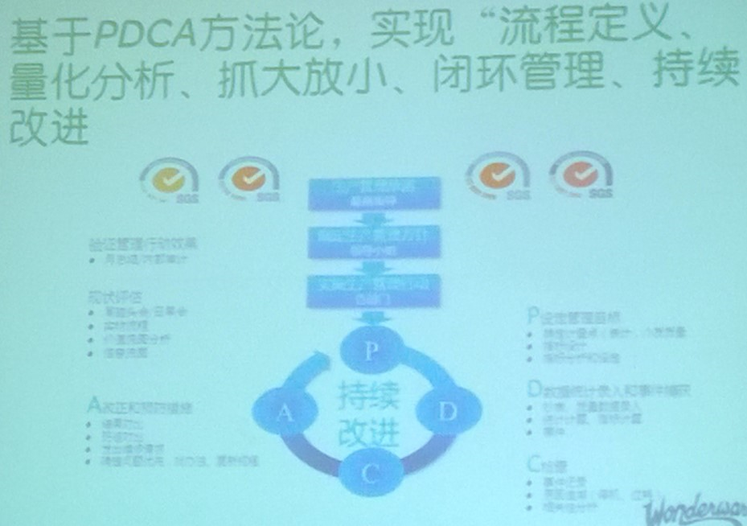
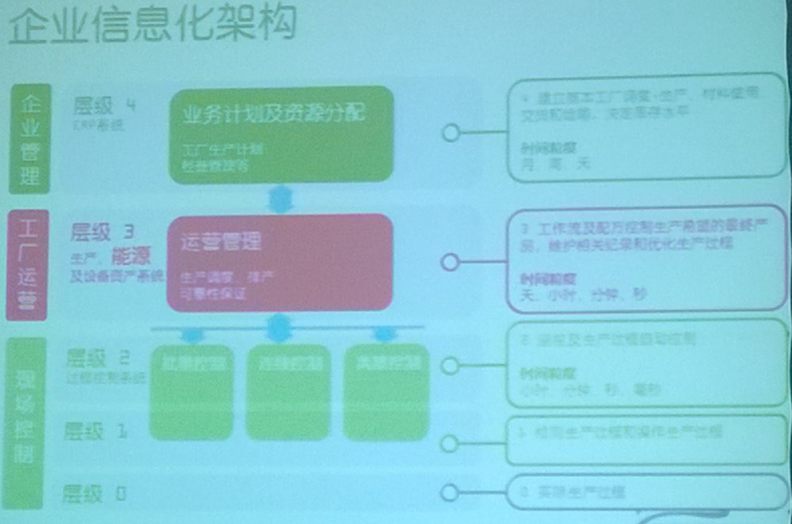
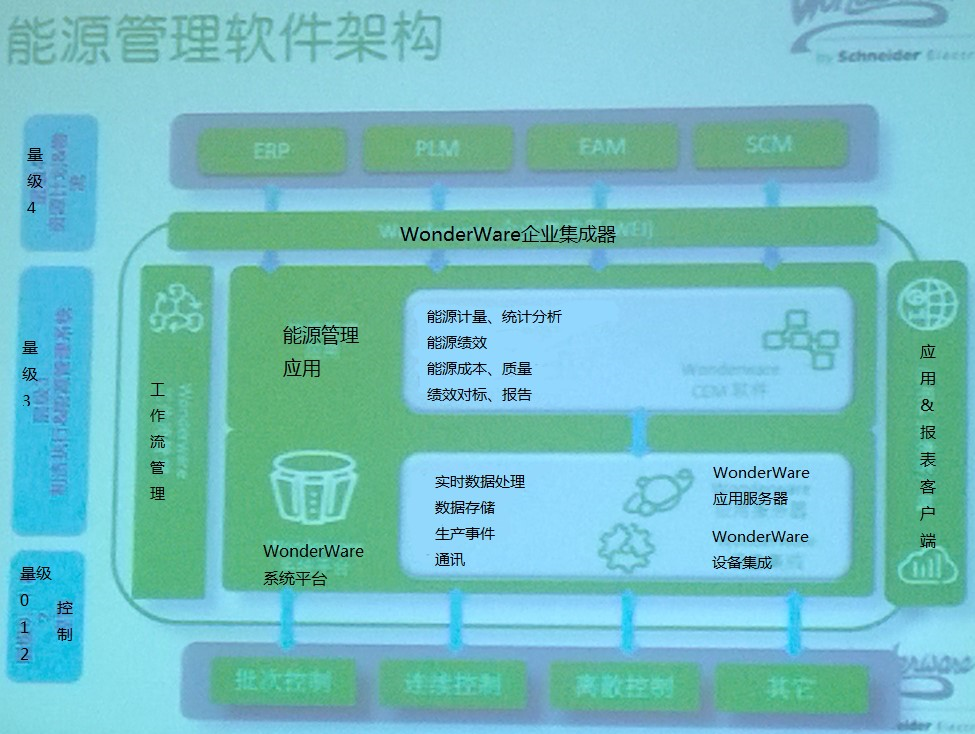
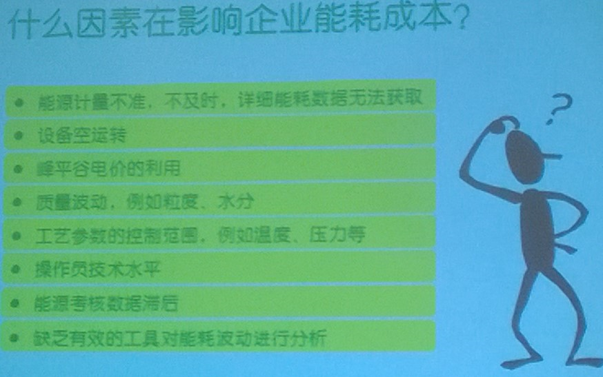
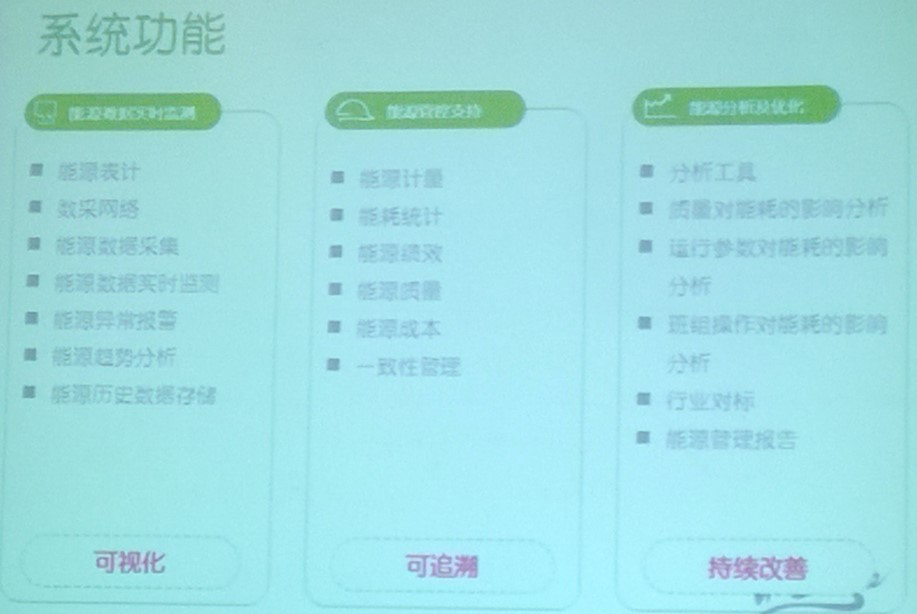